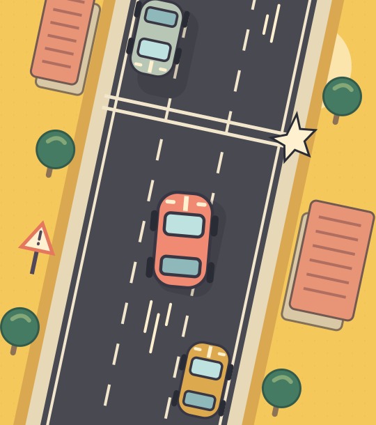
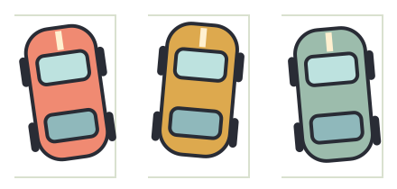

Každá mezera se počítá.
Těsné průjezdy, rostoucí tempo a rušné ulice. Drž si přehled, chraň brnění a proměň povedený průjezd v další body.
Město nezpomalí.
Najdi si vlastní cestu.
Naše první hra je ve vývoji. Na Google Play zatím není ke stažení. iOS plánujeme později.

Proplétej se provozem, hledej mezery a překonej svůj rekord. Traffic Rush je arkádová hra, ve které rozhoduje postřeh a odvaha projet o kousek blíž.
Těsné průjezdy, rostoucí tempo a rušné ulice. Drž si přehled, chraň brnění a proměň povedený průjezd v další body.
Deset výzev, tři stupně a celkem 30 medailí. Zlepšuj jednotlivé jízdy i dlouhodobé výsledky. Zlatá se nezíská sama.
Žádná registrace. Skóre, medaile a odemčené barvy se ukládají přímo v zařízení. Samotná jízda funguje i offline.
Nové barvy si odemkneš dosaženým skóre. Další vzhledy aut připravujeme — zatím bez nákupů v aplikaci.

Jmenuji se Vojtěch Müller a pod značkou GalgenGames vyvíjím Traffic Rush. Z původní hry v prohlížeči postupně vzniká mobilní arkáda.
Teď ladím Android verzi: plynulost, ovládání a drobnosti, díky kterým se chceš vrátit na další jízdu. Zpětná vazba je vítaná.
Podpora hry i dotazy k soukromí na jednom místě.